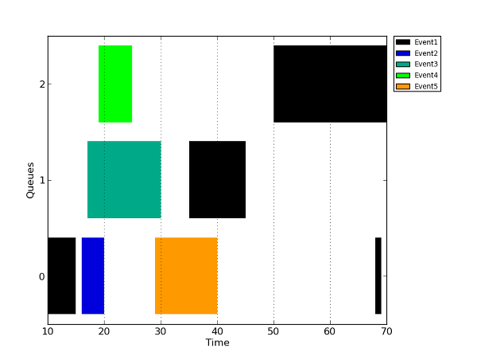

The C Framework for OpenCL, cf4ocl, is a pure C99 set of libraries and utilities with the following goals:
- Promote the rapid development of OpenCL C programs.
- Assist in the benchmarking of OpenCL events, such as kernel execution and data transfers.
- Simplify the analysis of the OpenCL environment and of kernel requirements.
cf4ocl is divided into four parts: i) library; ii) command-line utilities; iii) unit tests; and, iv) examples. Part i), the library, offers functions which aim to achieve goals 1 and 2. The command-line utilities, part ii), are focused on goal 3. The unit tests, part iii), aim to verify that the library functions are working properly. Finally, the examples show how to integrate the library functions in fully working OpenCL programs.
The target platform of cf4ocl is Linux, although, being pure C99, it can be compiled to other platforms as long as the dependencies, GLib and OpenCL, are met. The reference compiler is GCC with -Wall and -Wextra flags activated. The code is verified with cppcheck and is fully commented. API documentation can be generated with Doxygen via make.
Library code is licensed under LGPLv3, while the remaining code is licensed under GPLv3.
Table of contents
- Introduction 1.1. Library 1.1.1. CL Utils 1.1.2. CL Profiler 1.1.3. CL Errors 1.1.4. GError framework 1.2. Utilities 1.2.1. Device query 1.2.2. Kernel info
- How to use _cf4ocl_ 2.1. Dependencies 2.1.1. OpenCL 2.1.2. GLib 2.2. Library, utilities, tests and examples 2.3. Using the library in a new project 2.3.1. Compiling and linking 2.3.2. Using CL Utils 2.3.3. Using CL Profiler 2.3.4. Using CL Errors 2.3.5. Using GError Framework (GErrorF) 2.4. Generating the API documentation
- Other useful C frameworks/utilities for OpenCL
1. Introduction
cf4ocl is divided into four parts, with the following structure:
- Library
- CL Utils
- CL Profiler
- CL Errors
- GError framework
- Library tests
- CL Profiler
- GError framework
- Utilities
- Examples
- Bank conflicts test
- Matrix multiplication
The following sections describe each of the parts in additional detail.
1.1. Library
The library offers functions which promote the rapid development of OpenCL C programs, CL Utils, as well as their detailed benchmarking, CL Profiler. The library also facilitates error management in two ways: i) by converting OpenCL error codes into human readable strings, CL Errors; ii) by exposing a generic error handling framework, GError framework, used internally by CL Utils and CL Profiler.
1.1.1. CL Utils
The CL Utils section of the library allows the initialization of OpenCL environment objects, such as platform, device, context, command queues and devices, with a single function, clu_zone_new, thus avoiding the typical boilerplate code required for this setup. Device selection is decoupled from the OpenCL environment setup, being performed with a function passed as a parameter to clu_zone_new. The library supplies functions to accomplish this task automatically or through user interaction, although the client programmer can supply its own function with the required selection criteria. The destruction of the OpenCL environment, i.e. the removal of the respective objects from memory, is also achieved with one function, namely clu_zone_free.
Kernel compilation is simplified by the clu_program_create function, which can be used to build OpenCL device programs by passing an array of filenames containing kernel code.
The data structures in CL Utils are completely transparent to the client programmer, allowing access the underlying OpenCL objects at all times.
1.1.2. CL Profiler
The functions in CL Profiler allow the client programmer to obtain detailed profiling information about OpenCL functions for kernel execution and host-device memory transfers, including relative and absolute execution times. Profiling information is obtained using OpenCL events, which can be associated with the relevant OpenCL functions. CL Profiler supports multiple command queues and overlapping events, such as simultaneous kernel executions and data transfers. Profiling information can be exported in a configurable format, and plotted using a script included in cf4ocl.
1.1.3. CL Errors
CL Errors offers a single function which converts a OpenCL error into a human readable string.
1.1.4. GError framework
The GError framework is internally used by CL Utils and CL Profiler for error handling purposes. However, the framework is not in any way tied to OpenCL, so it can be used generically in any C program. It is composed of three macros and it is based on the GError object from GLib.
1.2. Utilities
1.2.1. Device query
Simple implementation of a program for querying available OpenCL platforms and devices with clean and useful output.
1.2.2. Kernel info
The kernel_info program performs static analysis of OpenCL kernels.
2. How to use cf4ocl
2.1. Dependencies
In order to compile cf4ocl and use it in projects, two dependencies are required: 1) OpenCL; and, 2) GLib (v2.32 or newer).
2.1.1. OpenCL
The OpenCL headers (for compiling) and shared library (for linking) can be installed from the packages offered by different OpenCL vendors such as AMD, Intel or Nvidia.
Alternatively, it is possible to install an OpenCL development environment in a some recent Linux distributions. For example, in Debian 7 and Ubuntu 13.04:
$ sudo apt-get install ocl-icd-opencl-dev
This will install the headers and shared library system-wide, avoiding the need to specify their location to GCC. However, to actually run an OpenCL program it is necessary to have a vendor implementation installed.
2.1.2. GLib
The simplest way to install GLib is using the package manager of the Linux distribution. For Debian and Ubuntu:
$ sudo apt-get install libglib2.0-dev
It is also advisable to install the libglib2.0-0-dbg or equivalent package to allow debugging at the GLib level.
2.2. Library, utilities, tests and examples
Assuming a working development environment with OpenCL and GLib properly setup, to build the library, utils and examples it is necessary to run make within the cf4ocl directory.
It is possible to build only specific targets, for example:
$ make lib
$ make utils
$ make examples
If the build failed, confirm if OpenCL and GLib are properly installed, and if GCC can find the OpenCL headers and shared library. If not, set the headers location in the CLINCLUDES Makefile variable, and set the shared library location in the CLLIBDIR Makefile variable.
The tests should be compiled separately with:
$ make tests
2.3. Using the library in a new project
Any of the three elements of the library can be used in a workflow without the need to use the others. However, both CL Utils and CL Profiler internally use the GError framework.
2.3.1. Compiling and linking
When building a program based on cf4ocl (or any OpenCL program) with GCC, it may be necessary to specify the location of the OpenCL headers with the -I flag, and the location of the shared library (libOpenCL.so) with the -L flag. If the OpenCL development files were installed from the package manager (e.g. the ocl-icd-opencl-dev package in Debian and Ubuntu), this is usually not required.
Additionally, in order to compile a program with GLib (required by cf4ocl), the following line should be added to the GCC syntax:
`pkg-config --cflags glib-2.0`
In order to link a program with GLib, it is necessary to add the following line to the GCC syntax:
`pkg-config --libs glib-2.0`
These two lines will expand correctly to the -I and -l flags required for compiling and linking, respectively.
2.3.2. Using CL Utils
The functions provided by CL Utils aim to facilitate the rapid development and deployment of C programs which use OpenCL. These functions are focused on two key tasks:
- Setup and tear down of the OpenCL environment, including device, context and command queues.
- Loading, compilation and tear down of OpenCL kernel programs.
These two tasks require very verbose code, with significant repetition between projects. CL Utils wraps these tasks into two functions, providing an additional third function for freeing up the allocated resources. The OpenCL objects created by CL Utils are available to the client programmer at all times through the CLUZone object. CL Utils does not wrap any other OpenCL tasks, such as kernel execution or data transfers, which can be performed directly with the respective OpenCL functions.
The first task is performed with the clu_zone_new function, which has the following prototype:
```c CLUZone* clu_zone_new( /* Type of device, e.g. CL_DEVICE_TYPE_CPU, CL_DEVICE_TYPE_GPU, etc. */ cl_uint deviceType, /* Number of command queues. */ cl_uint numQueues, /* Command queue properties, e.g. CL_QUEUE_PROFILING_ENABLE, etc. */ cl_int queueProperties, /* Pointer to a device selector function. */ clu_device_selector devSel, /* Extra arguments for device selector function. */ void* dsExtraArg, /* GLib's error reporting object (may be ignored). */ GError **err ); ```
The returned CLUZone object will contain the context, command queues, device information and an uninitialized kernel program. The program is initialized with the clu_program_create function as part of the second task. This function has the following prototype:
```c cl_int clu_program_create( /* The CLUZone object return by the clu_zone_new function. */ CLUZone* zone, /* List of files containing the source code for the kernels. */ const char** kernelFiles, /* Number of kernel files given in the previous parameter. */ cl_uint numKernelFiles, /* Compiler options. */ const char* compilerOpts, /* GLib's error reporting object (may be ignored). */ GError **err ); ```
A typical usage pattern of CL Utils in a C program:
```c include "clutils.h"
...
int main(int argc, char* argv[]) { ... CLUZone* zone = NULL; const char* oclSources[] = {"src1.cl", "src2.cl", "moresrc.cl"}; ...
/* Get a complete OpenCL environment using a GPU device, one */ /* command queue, no command queue options, if more than one */ /* GPU is available show selection menu to user, and ignore */ /* error reporting. */ zone = clu_zone_new(CL_DEVICE_TYPE_GPU, 1, 0, clu_menu_device_selector, NULL, NULL); ...
/* Create (compile) an OpenCL kernel program using three OpenCL */ /* source files, no compiler options, and ignoring error */ /* reporting. */ status = clu_program_create(zone, oclSources, 3, NULL, NULL); ...
/* Perform OpenCL tasks such as data transfer and kernel execution */ /* using the OpenCL objects (queues, program, context, etc.) */ /* available within the CLUZone object. */ ...
/* Free the CLUZone object and all of the contained OpenCL objects.*/ /* This object should only be released after all OpenCL objects */ /* not controlled by CL Utils (kernels, events, memory objects) */ /* are released. */ clu_zone_free(zone);
...
} ```
The fourth parameter of clu_zone_new is a pointer to a device selector function, which has the following definition:
```c typedef cl_uint (clu_device_selector)( / Array of available devices and respective information. */ CLUDeviceInfo* devInfos, /* Number of devices in array. */ cl_uint numDevices, /* Extra arguments to selector function. */ void* extraArg ); ```
CL Utils provides two ready to use device selector functions:
clu_menu_device_selector - If more than one device exists, presents a selection menu to the user. If extra argument is given it should be the array index of the preferred device.clu_info_device_selector - Selects a device by device name, device vendor and/or platform name, any/all of which are given in the extra argument.
For other device selection requirements, the client programmer can develop a specific device selector function.
2.3.3. Using CL Profiler
The goal of CL Profiler is to provide detailed benchmarking information about OpenCL events such as kernel execution, data transfers, and so on. CL Profiler is prepared to handle overlapping events, which usually take place when the programmer is trying to optimize its application by simultaneously transfer data to and from the OpenCL device and execute kernels, using different command queues.
CL Profiler consists of two files, clprofiler.c and clprofiler.h. In order to use CL Profiler in a project, it is necessary to include the clprofiler.h header file.
For the purpose of this explanation, we will consider that two command queues are being used:
```c cl_command_queue queue0; /* Used for host-device data transfer. */ cl_command_queue queue1; /* Used for kernel execution. */ ```
Additionally, we will consider the following OpenCL events:
```c cl_event ev_transf_in; /* Transfer data from host to device. */ cl_event ev_kernel_A_1; /* Execute kernel A on device. */ cl_event ev_kernel_B; /* Execute kernel B on device. */ cl_event ev_kernel_A_2; /* Execute kernel A on device again. */ cl_event ev_transf_out; /* Transfer data from device to host. */ ```
The ProfCLProfile structure forms the basis of CL Profiler. It can: 1) measure the total elapsed time of the application (or the relevant part of the application); and, 2) keep track of the device time required by the OpenCL events. The following instruction creates a new ProfCLProfile structure:
```c /* Create a new ProfCLProfile structure. */ ProfCLProfile* profile = profcl_profile_new(); ```
In order to start measuring the relevant part of the application, the following instruction should be issued:
```c /* Start basic timming / profiling. */ profcl_profile_start(profile); ```
At this time, the typical OpenCL application workflow, such as transferring data and executing kernels, should take place. The above defined events must be associated with the respective clEnqueue* OpenCL functions in order to be later analyzed. A typical workflow may be finalized with the following instructions:
```c /* Finish all pending OpenCL operations. */ clFinish(queue0); clFinish(queue1); ```
Profiling should be stopped at this point.
```c profcl_profile_stop(profile); ```
Now the events can be added to the profiler structure. The profcl_profile_add function uses the second parameter (a string) as a key to differentiate between events. Thus, if the same key is given for different OpenCL events, CL Profiler will consider it to be the same semantic event. This can be useful for aggregating execution times of events which occur innumerous times in a cyclic fashion (in a for loop, for example).
```c /* Add events to be profiled/analyzed. */ profcl_profile_add(profile, "Transfer data to device", ev_transf_in, NULL); profcl_profile_add(profile, "Kernel A", ev_kernel_A_1, NULL); profcl_profile_add(profile, "Kernel B", ev_kernel_B, NULL); profcl_profile_add(profile, "Kernel A", ev_kernel_A_2, NULL); profcl_profile_add(profile, "Transfer data from device", ev_transf_out, NULL); ```
The above code will consider OpenCL events ev_kernel_A_1 and ev_kernel_A_2 to be the same semantic event because the same key, string Kernel A, is used. Thus, the total execution time for the semantic event Kernel A will be the sum of respective two OpenCL events. CL Profiler can even determine overlaps of a semantic event with itself (i.e., two overlapping OpenCL events which are added for analysis with the same key).
After all the events are added, it is necessary to instruct CL Profiler to perform the required calculations in order to determine the absolute and relative times of all events, and how these correlate with the total elapsed time of the relevant part of the application.
```c profcl_profile_aggregate(profile, NULL); ```
Finally, the complete benchmarking info can be printed:
```c profcl_print_info(profile, PROFCL_AGGEVDATA_SORT_TIME, NULL); ```
Two detailed tables will be shown on screen: one for individual events (sorted by name or execution time), and another showing event overlaps, if any occurred.
A list of all events can be exported to a file or stream using the profcl_export_info* functions.
```c profcl_export_info_file(profile, "profileinfo.txt", NULL); ``` Export options, such as field delimiters, field separators, and so on, can be set using the profcl_export_opts_set() function.
A Gantt chart type graph can be produced from the exported file (using the default options) via a Python script included with cf4ocl:
$ python plot_events.py profileinfo.txt

A similar plot can also be produced with gnuplot using the gantt.py script.
The OpenCL events can be freed after they have been added to the profiler structure and before the program terminates.
```c clReleaseEvent(ev_transf_in); clReleaseEvent(ev_kernel_A_1); clReleaseEvent(ev_kernel_B); clReleaseEvent(ev_kernel_A_2); clReleaseEvent(ev_transf_out); ```
The last parameter of some of the profcl_* functions is used for error handling and to obtain detailed error messages if an error occurs. By passing NULL, the programmer choses to ignore that feature. Such approach is not critical because all of the error-prone profcl_* functions also return their execution status code. No error handling is performed in this explanation, though.
For map events, CL Profiler provides the profcl_profile_add_composite() function, which accepts two OpenCL events, one relative to the map operation, and the other to the unmap operation. The function uses the start instant of the map event, and the end instant of the unmap event, in order to build a composite semantic event.
2.3.4. Using CL Errors
OpenCL functions usually return an error or status code, so that the client programmer can check if the function call was successful, and if not, what kind of problem occurred. The programmer can either check for all possible errors for a given function call using the OpenCL error constants (which map the error codes), or can just return or print the error code, and then look at the cl.h header to determine what error occurred. CL Errors allows for a third option: convert the error code into a human readable string. The usage is very simple, consisting of a single call to the clerror_get() function, passing the error code as an argument:
```c cl_int status; ... status = clFinish(some_command_queue); if (status != CL_SUCCESS) { printf("An error occurred: %s\n", clerror_get(status)); ... } ... ```
2.3.5. Using GError Framework (GErrorF)
The main purpose of GErrorF is to provide error handling constructs to CL Utils and CL Profiler. No knowledge of GErrorF is required to use CL Utils and/or CL Profiler. However, because it is sufficiently generic to be used in any C application, a specific description is warranted.
GErrorF uses GLib's GError object for function error reporting. This explanation assumes some familiarity with GLib's error reporting.
GErrorF is defined by three macros in gerrorf.h:
gef_if_error_create_goto - Catches errors from non-GError aware functions.gef_if_error_goto - Catches errors from GError aware functions.gef_if_error_propagate_goto - Same as previous macro, but propagates error in a source GError object to a new destination GError object. Useful for wrapping errors thrown by library / third-party GError aware functions.
GErrorF establishes an error handling methodology for C programs not entirely dissimilar to the pattern used in Linux kernel development. Any function producing recoverable runtime errors, from main to functions located deeper in the call stack, can benefit from this approach. The general usage of GErrorF is as follows:
```c include "gerrorf.h";
...
int main(int argc, char* argv[]) {
...
/* Must initialize every allocable pointers and objects */
/* to NULL. */
int some_vector* = NULL;
/* GError object. */
GError *err = NULL;
/* Function return status. */
int status = SUCCESS_CODE;
...
/* Call a GError aware function (defined bellow). */
some_function(params, &err);
/* Catch possible error in GError-aware function. In this */
/* case the GError object is initialized by the called */
/* function. */
gef_if_error_goto(
err, /* GError object. */
SOME_ERROR_CODE, /* Error code to set in status. */
status, /* Function return status. */
error_handler /* Label to goto in case of error. */
);
/* In the previous function it is possible to replace an app */
/* specific error code with GErrorF special constants */
/* GEF_USE_STATUS and GEF_USE_GERROR. The former leaves the */
/* status variable untouched (useful for cases where the */
/* function itself returns a usable int status), while the */
/* later sets status to the error code set in the GError */
/* object. */
...
/* Call a non-GError aware function. */
some_vector = (int*) malloc(sizeof(int) * SOME_SIZE);
/* Catch possible error in non-GError aware function. */
gef_if_error_create_goto(
err, /* GError object. */
SOME_QUARK_ERROR, /* GLib GQuark identifier. */
some_vector == NULL, /* Error condition. */
SOME_ERROR_CODE, /* Error code to set in err. */
error_handler, /* Label to goto in case of error. */
"Unable to alloc. mem." /* Error msg to set in err. */
);
...
/* If we get here, there was no error, goto cleanup. */
g_assert(err == NULL); /* Make sure err is NULL. */
goto cleanup; /* Goto the cleanup section. */
error_handler: /* If we got here there was an error, verify that it is so. */ g_assert (err != NULL); /* Print error message. */ fprintf(stderr, "Error message: %s\n", err->message); /* Make sure function status contains an error code. */ if (status == SUCCESS_CODE) status = err->code; /* Free the GError object. */ g_error_free(err);
cleanup: /* Free any allocated memory. */ if (some_vector) free(some_vector);
...
/* Return program status. */ return status; }
...
/* This function is GError-aware, and will initialize the GError */ /* object if an error occurs. The GError object usually comes */ /* as the last parameter. */ void some_function(some params, GError** err) {
...
FILE* fp;
const char* filename = "somefile.txt";
...
/* Try to open a file. This function is not GError aware. */
fp = fopen(filename, "r");
/* Catch possible error in non-GError aware function. */
gef_if_error_create_goto(
*err, /* GError object. */
SOME_QUARK_ERROR, /* GLib GQuark identifier. */
fp == NULL, /* Error condition. */
SOME_ERROR_CODE, /* Error code to set in err. */
error_handler, /* Label to goto in case of error. */
"Unable to open file %s", /* Error msg to set in err. */
filename /* Extra args for error msg. */
);
...
/* If we got here, everything is OK. */
/* It's good practice to check if err is NULL (caller doesn't */
/* care about error reporting OR if a non-null err is */
/* pointing to NULL (i.e. no error was reported). */
g_assert (err == NULL || *err == NULL);
/* Goto finish label, ignoring the error handling section. */
goto finish;
error_handler: /* If we got here there was an error, verify that it is so, */ /* i.e. either the caller doesn't care about error reporting, */ /* in which case err is NULL, OR a non-null err is in fact */ /* pointing to an initialized GError object. */ g_assert (err == NULL || *err != NULL);
/* Run any other error handling code. */ ...
finish:
/* Close the file, if open. */
if (fp) fclose(fp);
/* Perform additional required cleanup (free's and so on). */
...
/* Bye. */
return;
}
```
As can be observed, GErrorF enforces a strict programming pattern, which requires that complying functions follow a set of rules:
- Define all pointers and objects in the beginning of the function and initialize them to NULL.
- Define a pointer to a GError object and set it to NULL.
- Always test for errors after calls to error throwing functions with
gef_if_error_create_goto (non-GError aware functions) or gef_if_error_goto (GError aware functions). If an error occurs program execution will jump to the error handling block.
- Use the following pattern at the end of the function:
- goto cleanup
- error handling block
- cleanup: perform clean up
- return (possibly with a status code)
This pattern avoids many bugs and makes error catching and handling possible in C. However it is not to everyone's taste, and is thus a completely optional aspect of cf4ocl.
2.4. Generating the API documentation
The API documentation can be generated with make if Doxygen (version 1.8 or newer) is installed. In the cf4ocl directory run:
$ make docs
The documentation will be generated in the ./doc folder. The direct use of the doxygen command should be avoided because Doxygen's markdown is not 100% compatible with the GitHub Flavored Markdown used in this document. When building the documentation with make, the required conversion is performed first.
3. Other useful C frameworks/utilities for OpenCL
If cf4ocl does not meet your requirements, take a look at the following projects: